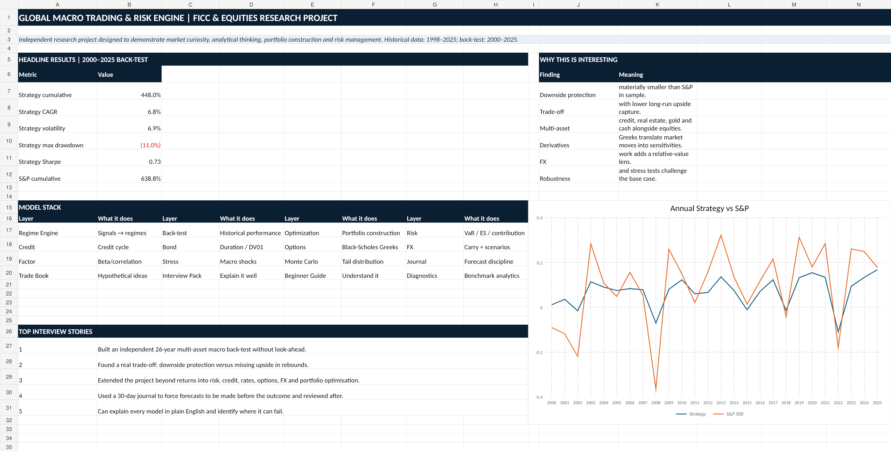
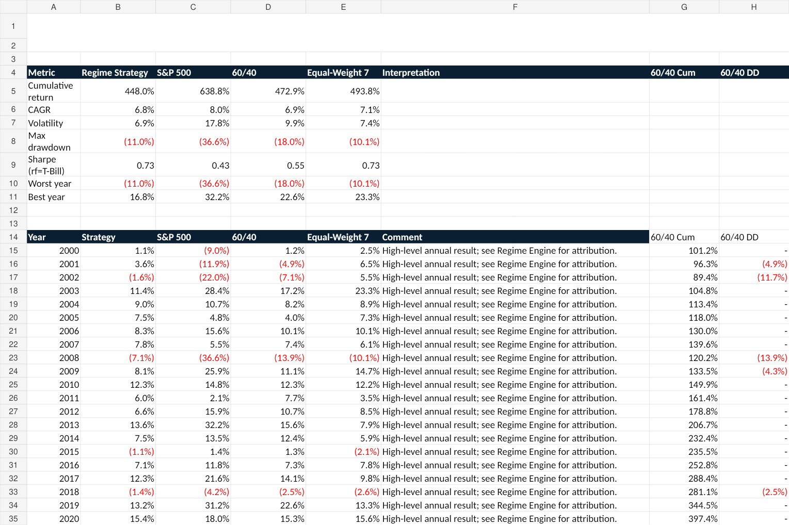
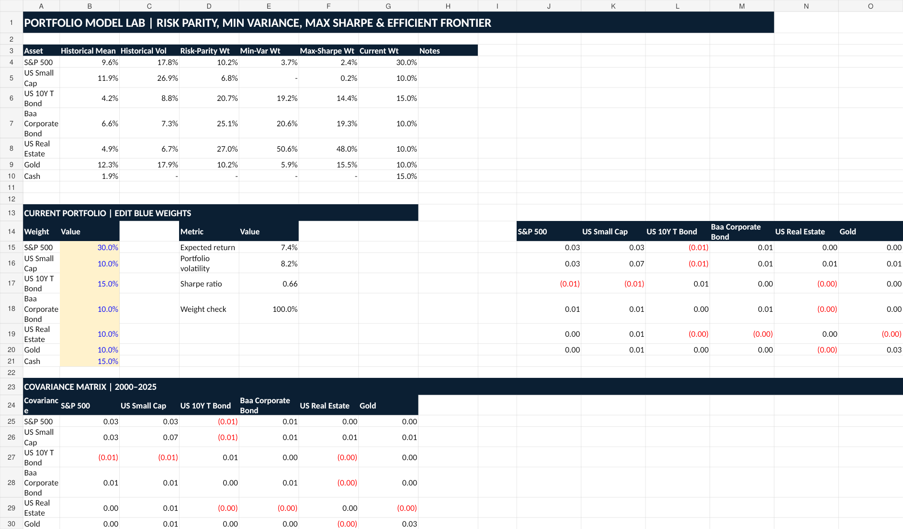
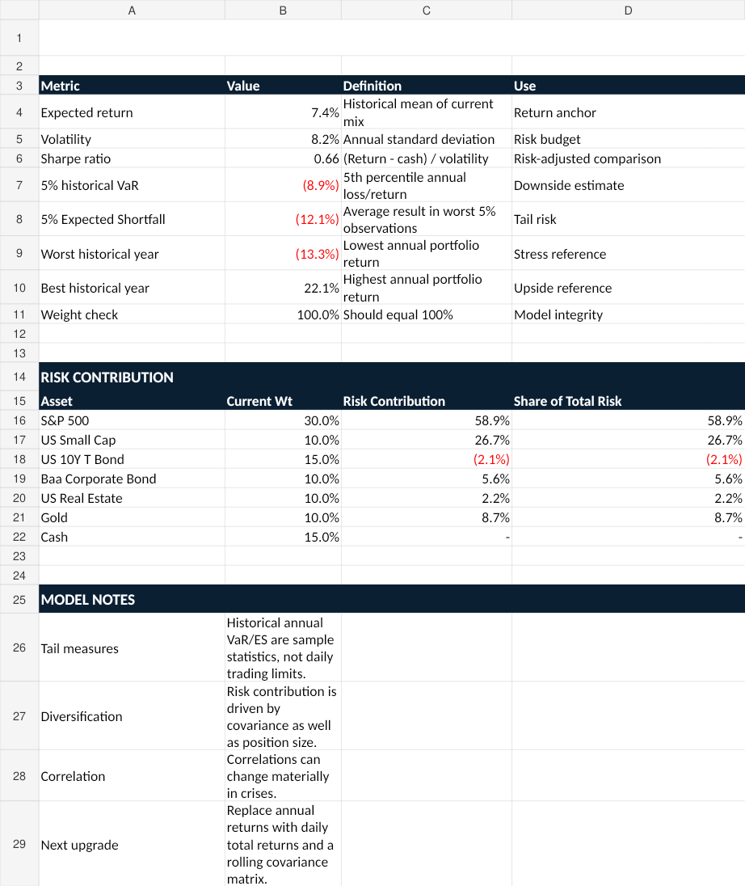
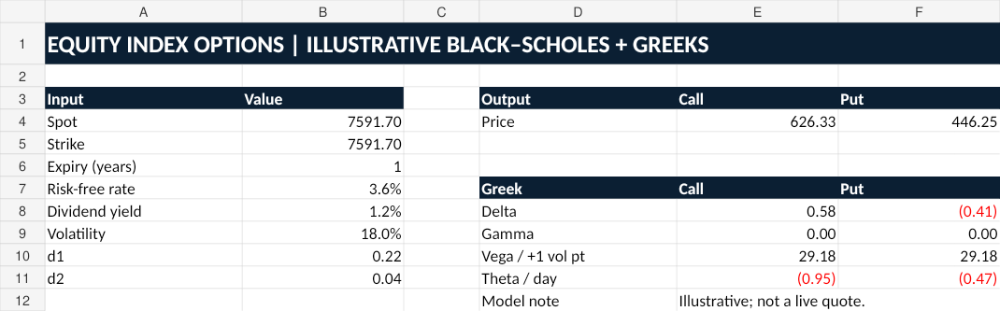

Historical sample2000–2025
Strategy CAGR6.8%
Volatility6.9%
Max drawdown-11.0%
Dashboard

Back-test

Optimisation

Risk

Options

Research question
Can macroeconomic information and market signals be turned into a repeatable framework for adjusting portfolio risk across changing market environments?
Key conclusion
The strategy did not beat the S&P 500 over the full sample. It did, however, materially reduce historical volatility and drawdown. The main lesson was the trade-off between capital protection and participation in strong equity recoveries.